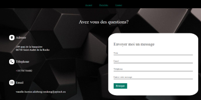
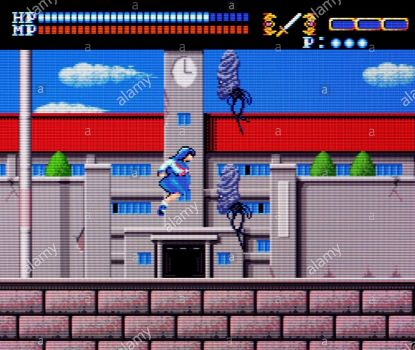
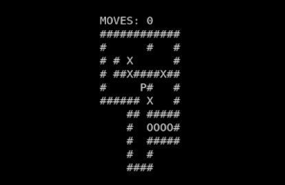
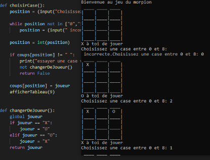

portofolio
Ce site est un de mes projets web personnels que j'ai créer afin de mettre en avant mon savoir faire et ainsi enrichir mes compétences. ce projet m'a permis d'acquérir des compétences en front end, et de me familiariser avec le javascript.
Projet réalisé en HTML & CSS , Javascript
My Runner
Il était question dans ce projet de créer un jeu qui boucle avec un personnage qui devant sauter afin d'éviter des obstacles disposés aléatoirement sur son chemin.
Projet réalisé en C et utilisation de la librairie CSFML
Sokoban
Réaliser le jeu sokoban en version terminal à l'aide de la librairie ncurses. Jeu consistant à ranger des caisses sur des cases cibles, le joueur pouvant uniquement pousser les caisses et non les tirer.
Projet réaliser en C avec la librairie NCURSES
Morpion
jeu opposant deux joueur, le but étant d'aligner avant son adversaire des symboles identiques verticalement, horizontalement, ou en diagonale sur une grille
Projet réaliser en